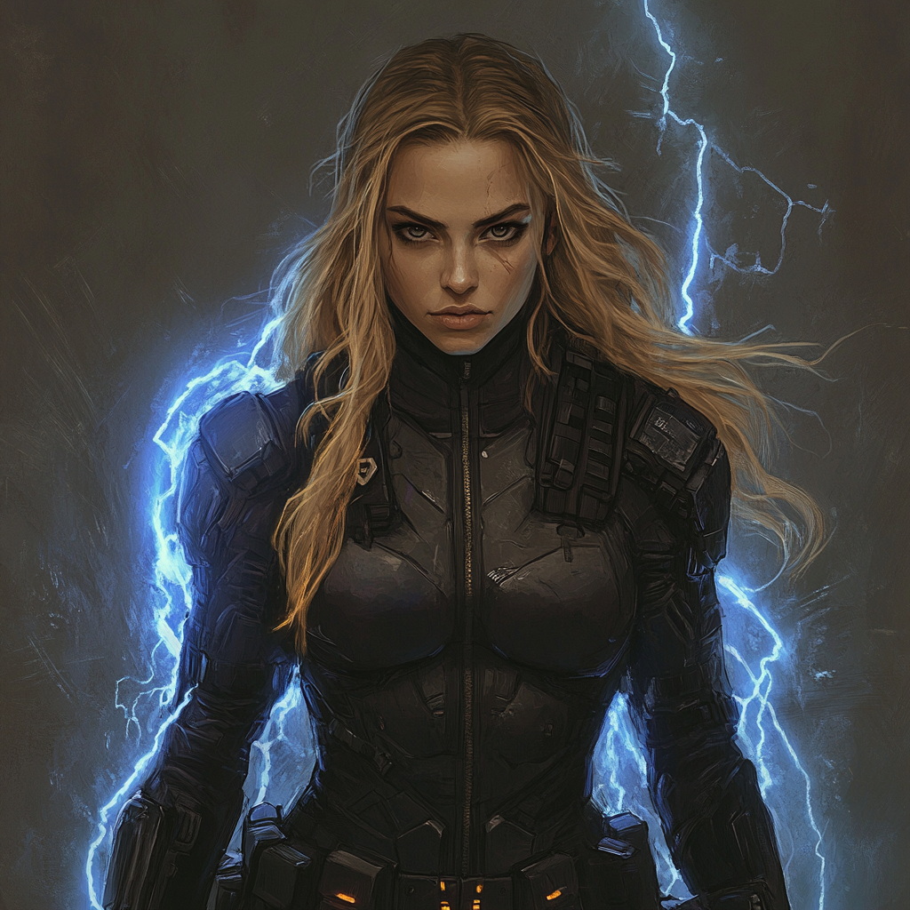

Natalia Orlov / The Vanguard
At a Glance
| Field | Value |
|---|---|
| Full Name | Natalia Orlov |
| Hero Name | The Vanguard |
| A.E.G.I.S. File | AEGIS-VGD-005 |
| DOB | December 1, 1966 |
| Age | 59 |
| Birthplace | [Unknown — Soviet-era; defected from program] |
| Physical | Conceals extensive scarring from enhancement procedures. Carries herself with precision even when nothing is required of her. |
| Affiliation | The Alliance — Core Member |
| Status | Active. A.E.G.I.S. has never fully trusted her. She has never expected them to. |
Powers
Extensively enhanced — Operation MANIFEST, final generation. Enhanced over four years (1990–1994): neural implants, gene-locked muscle density, bioelectric organ integration that allows her to manifest electricity, pain suppression protocols, and adaptive combat training uploaded to her subconscious.
She is not enhanced in the conventional sense. She is what the first generation of deliberate human engineering produced. The scars are the visible record of it.
Background
Selected at 24 as the most viable subject across two generations of program candidates. Enhancements spanned four years. Deployed on assassinations, government destabilization operations, and suppression of enhanced individual emergence in adversarial states.
She ran missions for years before the pattern recognition caught up. The conclusion she reached: all institutions fail and corrupt themselves — even those that claim to protect humanity. She had no doubt that A.E.G.I.S. would eventually reach the same endpoint.
She defected. Paragon found her, or she found Paragon; the exact history is not in any file she has seen.
The Casey Holt mirror: A.E.G.I.S. ran MANIFEST again after Natalia left. They refined the methodology and produced a second-generation asset. She does not know Casey Holt exists. The fact that the institution she defected from simply tried again — more quietly, more precisely — is its own verdict on her conclusions. She would find it clarifying rather than surprising. She has not been given the chance.
Character Profile
She is the oldest person on the team and she operates like it: no wasted movement, no performed certainty, an entirely unsentimental relationship with what it costs to keep doing this. She has seen more institutional failure than anyone else in the Alliance. She expects it. She stays anyway.
Her relationship to A.E.G.I.S. is the defining tension of her institutional life. They made her. She left them. She is now technically allied with them through the Alliance framework, and they watch her more carefully than they watch anyone else. She is aware of this. She monitors the monitoring.
Relationships
| Person | Relationship |
|---|---|
| The Alliance | Co-founder. The institution she believes in most is also the one she holds the most lightly. |
| A.E.G.I.S. | The organization that built her and has never stopped watching her. Mutual wariness dressed as cooperation. |
| Ethan Roberts / Paragon | He brokered her inclusion. She respects the intent and is realistic about what that means. |
| Casey Holt / Scythe | Does not know she exists. If she did, it would confirm everything she left A.E.G.I.S. over. |
Open Questions
- Does Natalia have any residual intelligence contacts from her operational years that the Alliance doesn't know about?
- What would she do if she discovered A.E.G.I.S. ran MANIFEST again after she left?
- What is the full nature of her arrangement with the Alliance — does she have constraints she accepted as terms of entry?
- How close is she to any individual Alliance member, and is there anyone she would genuinely trust with the things she knows?
Last updated: March 2026